Dashboard redesign and onboarding design for a B2B mobile application - simplifying financial data interpretation and improving clarity of key indicators.
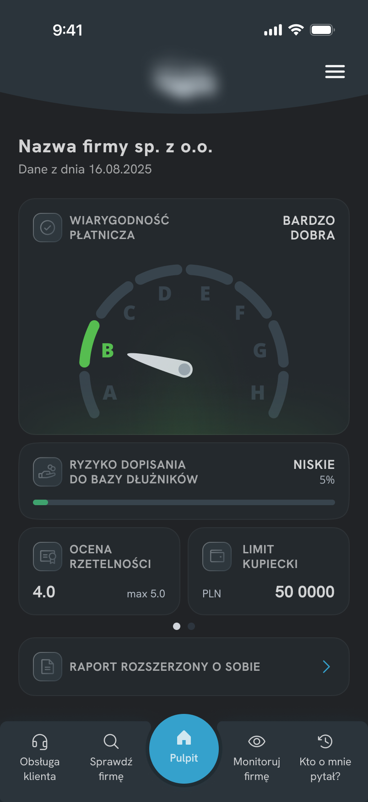
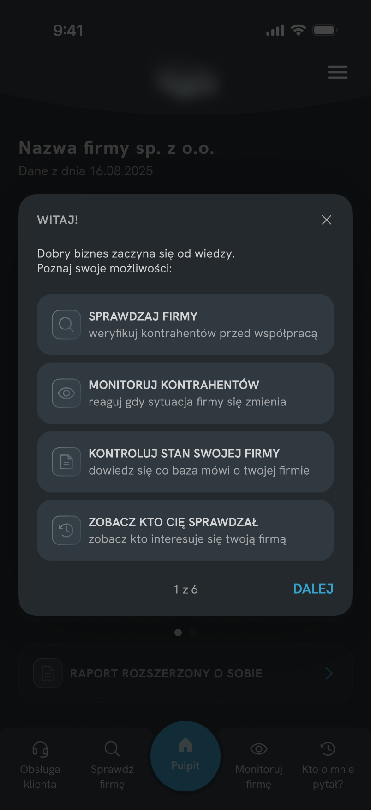
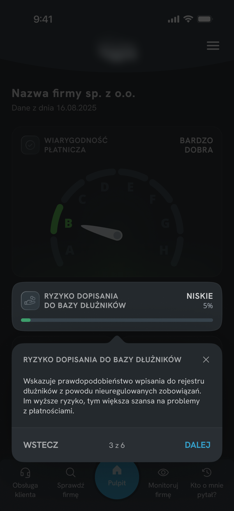
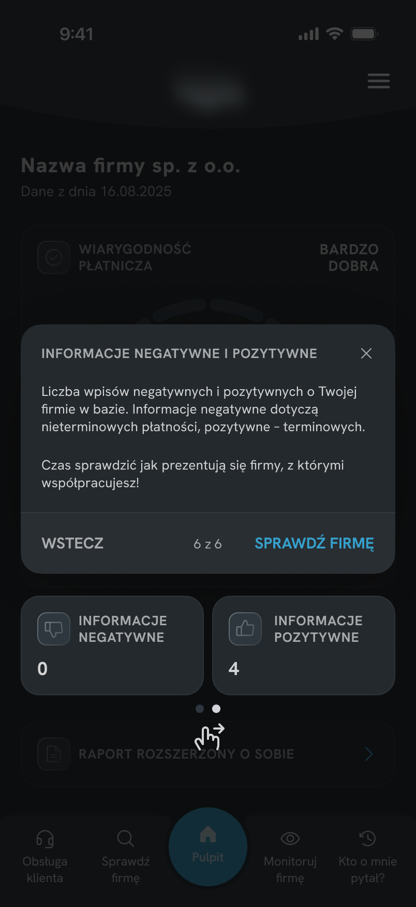
A mobile version of a B2B system used to monitor companies' financial standing - checking credibility, tracking changes, and downloading reports. Designed for businesses from small companies to larger enterprises.
Redesign of the main dashboard and creation of a contextual onboarding experience. The project started as an onboarding task - but an audit of the existing interface showed the UI itself needed to be simplified first.
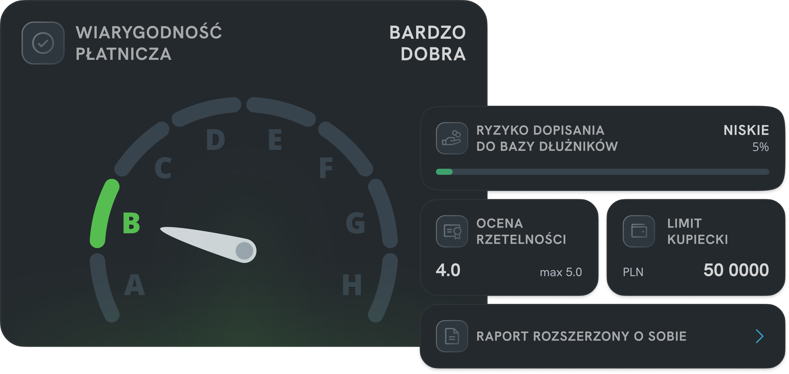
Users had difficulty correctly interpreting the data presented by the main dashboard component. According to customer support feedback, four recurring issues were identified.
HOME SCREEN - BEFORE
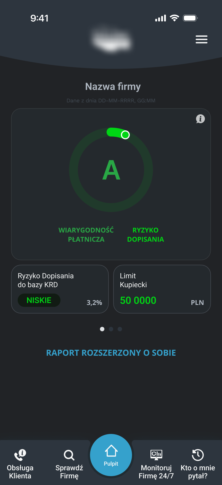
ONE COMPONENT, TWO MEANINGS
Credibility and risk merged into a single visual element with no structural separation.
COLOR AS ONLY DIFFERENTIATOR
Meaning communicated through subtle color differences only - easy to miss.
INFORMATION DUPLICATION
Risk data repeated across dashboard sections without adding new context.
LOW SCANNABILITY
Uniform visual weight made it impossible to identify what mattered most.
Customer support frequently received questions about dashboard metrics, suggesting that key financial indicators were not self-explanatory.
Separate financial indicators so users understand their meaning faster.
Simplify the structure, remove duplication, reduce visual noise.
Explain key elements without taking users out of the application flow.
Create a more modern and visually consistent experience.
Two unrelated metrics were merged into a single visualization, making it difficult to understand what was actually being measured.
Each indicator received its own component and a clearer hierarchy.
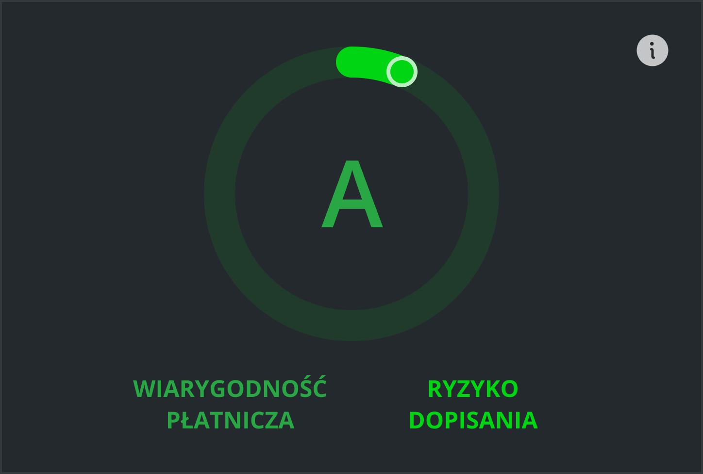
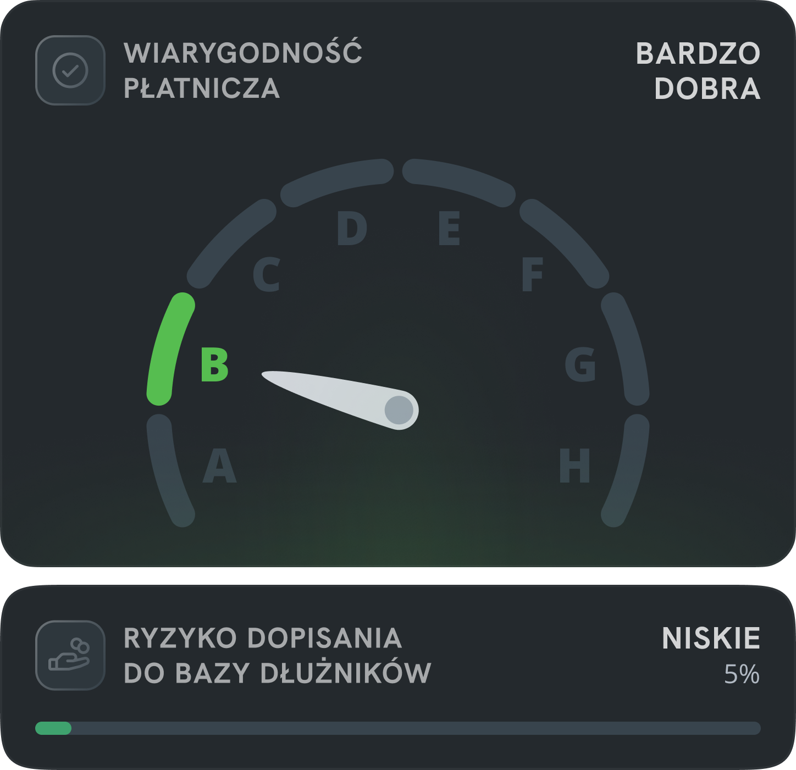
Instead of trying to improve the existing chart, I separated the information into two independent components - a shield gauge for payment credibility and a card for database risk - each with a single purpose and communicates it without relying solely on color.
The most important information became more explicit and easier to understand from the first interaction with the screen - without relying solely on color.
A scoring pattern users already knew from our other related products.
The same familiar model applied to payment credibility - no new learning required.
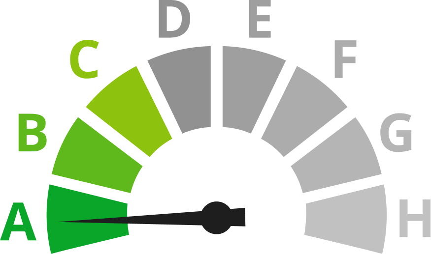
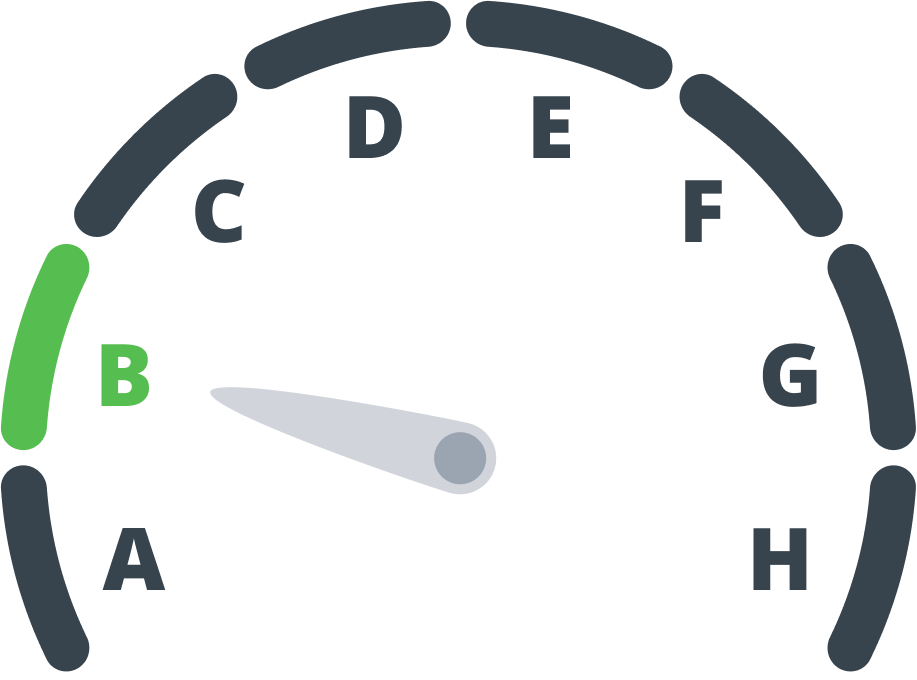
The new payment credibility indicator was based on a scoring pattern already used in other related products. Instead of introducing a new model for interpreting data, the redesign used a solution that was already familiar to users within the existing product ecosystem.
The dashboard became more consistent and easier to understand - zero additional learning cost for returning users.
Technical feel, difficult to scan, no clear visual hierarchy.
Modular layout, calmer hierarchy, more modern and scannable.
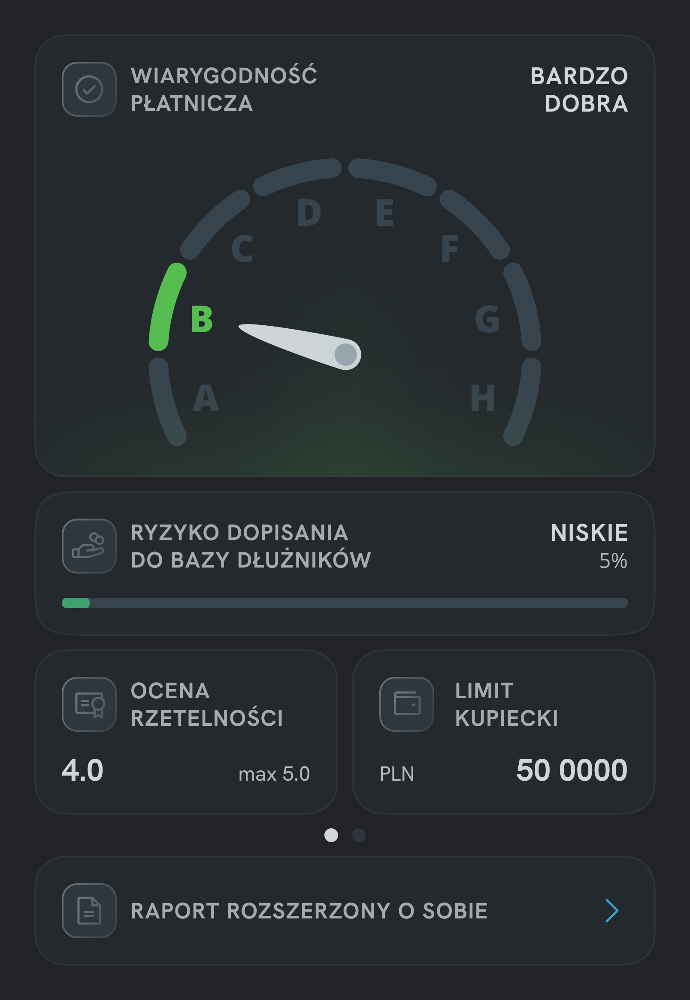
Larger spacing, a modular card-based layout, and a calmer hierarchy helped create an interface that was more scannable and less technical. The goal was to move away from the "official" character of the product and create a more modern experience.
This consistent pattern helps users quickly build a mental model across the entire screen.
The project originally started as an onboarding initiative. Customer support reported that users frequently asked about dashboard metrics and struggled to interpret key financial indicators.
During the audit, it became clear that part of the confusion came from the interface itself. Instead of explaining a complex dashboard through onboarding alone, I simplified the dashboard first and used onboarding only where additional context was still needed.
Users struggled to interpret dashboard metrics.
Create onboarding to explain the main screen.
Simplify the dashboard before adding guidance.
Three formats were considered. The choice came down to how closely each format matched the real interface context during learning.
The challenge was not explaining every feature, but helping users understand the parts of the dashboard that generated the most confusion.
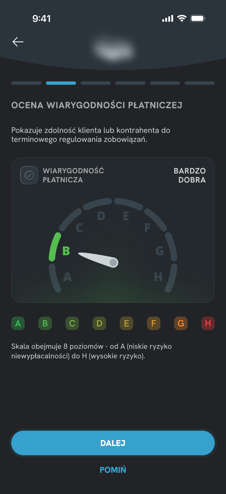
Separate onboarding flow shown before entering the product. Users learn the interface upfront, but without the context of actual use.
Sheet overlaid on the dashboard. It keeps users closer to the interface, but still explains the screen from a separate layer rather than pointing directly to each element.
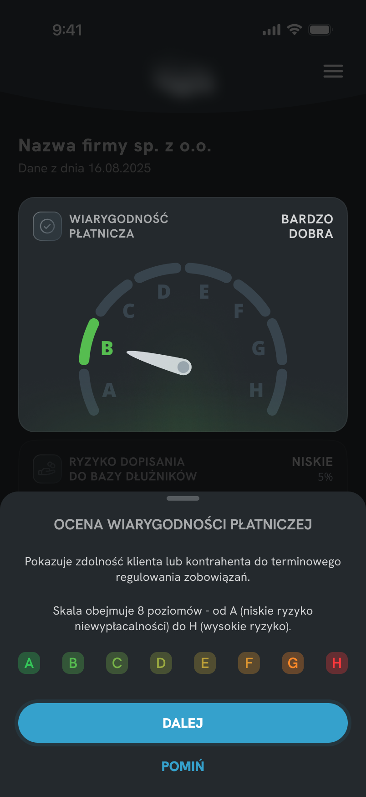
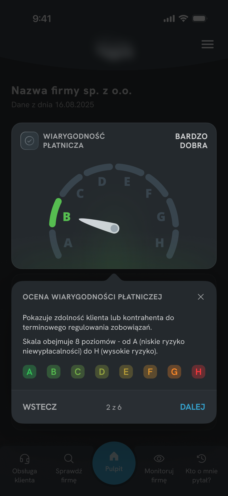
Contextual hints anchored to specific UI elements. Users learn directly within the interface, making each explanation easier to connect with what they see.
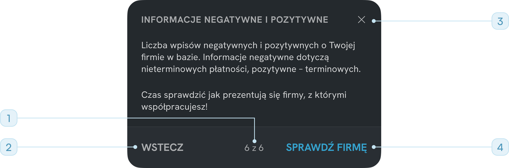
"6 of 6" - user always knows where they are in the sequence
"Back / Next" - user controls the pace, nothing is forced
Close (X) available at all times - not every user needs the full flow
"Check company" CTA - ends onboarding with a concrete next step
The redesign combined two complementary approaches:
This reduced the need for interpretation while keeping onboarding lightweight and focused.
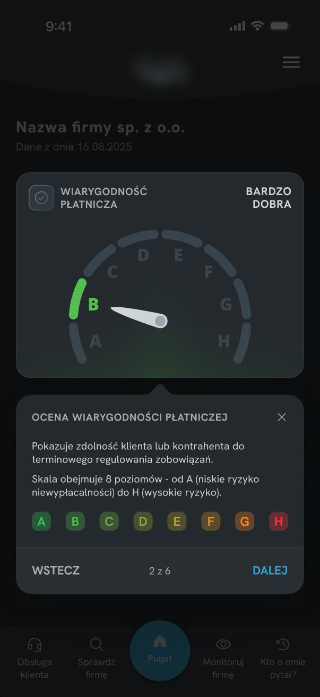
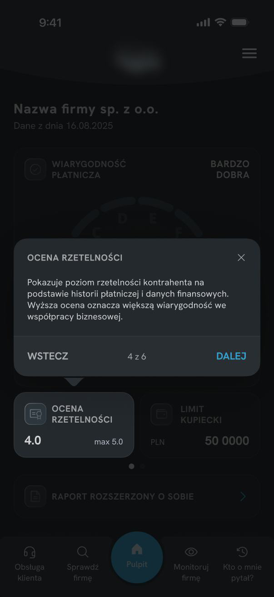
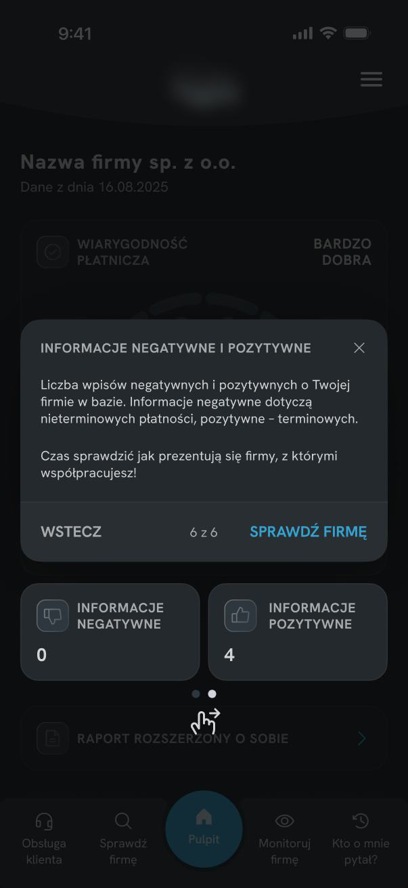
This project reinforced how easily financial data becomes opaque when several meanings share a single visual container - and how small changes in hierarchy can significantly improve comprehension. In the next stage, I would like to validate whether users correctly interpret the new indicators during their first session.